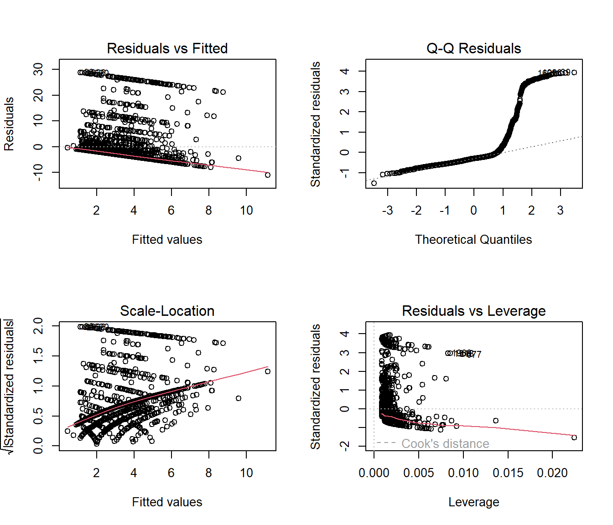
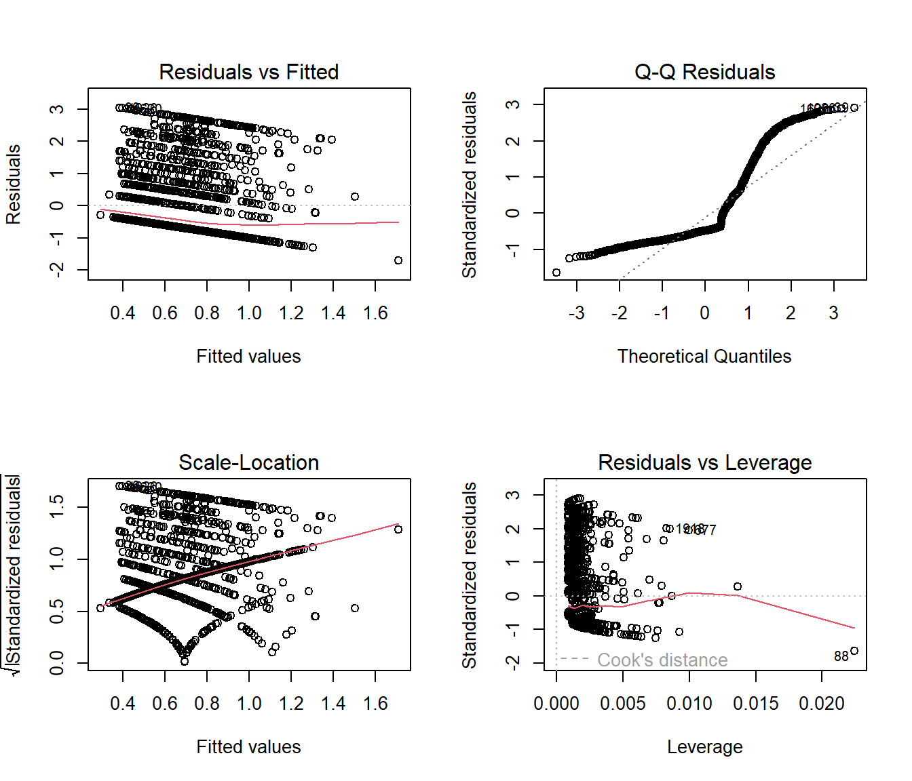
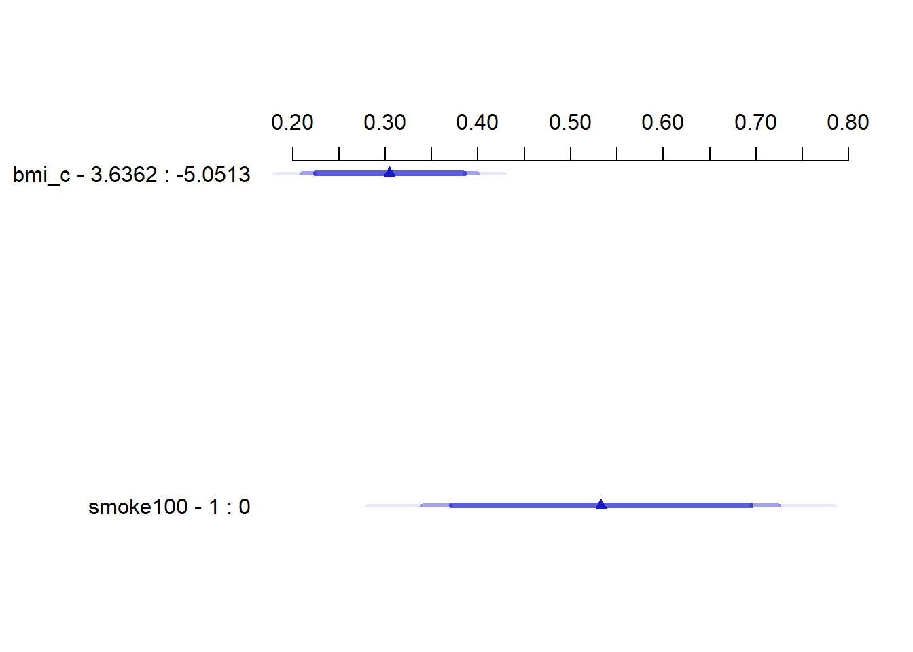

knitr::opts_chunk$set(comment = NA)
library(broom)
library(boot)
library(countreg)
library(GGally)
library(lmtest)
library(rms)
library(sandwich)
library(tidyverse)
theme_set(theme_bw())24 Modeling a Count Outcome
In this chapter, and the next two chapters, I use a count outcome (# of poor physical health days out of the last 30) in OHIO SMART data created in Chapter 6 to demonstrate regression models for count outcomes.
Methods discussed in the chapter include:
- Ordinary Least Squares
- Poisson Regression
- Overdispersed Quasi-Poisson Regression
24.1 R Setup Used Here
24.2 Data Load
smart_oh <- readRDS("data/smart_ohio.Rds")24.3 Creating A Useful Analytic Subset, ohioA
For this work, I’ll include the subset of all observations in smart_oh with complete data on these 14 variables.
| Variable | Description |
|---|---|
SEQNO |
Subject identification code |
mmsa_name |
Name of statistical area |
genhealth |
Five categories (E, VG, G, F, P) on general health |
physhealth |
Now thinking about your physical health, which includes physical illness and injury, for how many days during the past 30 days was your physical health not good? |
menthlth |
Now thinking about your mental health, which includes stress, depression, and problems with emotions, for how many days during the past 30 days was your mental health not good? |
healthplan |
1 if the subject has any kind of health care coverage, 0 otherwise |
costprob |
1 indicates Yes to “Was there a time in the past 12 months when you needed to see a doctor but could not because of cost?” |
agegroup |
13 age groups from 18 through 80+ |
female |
1 if subject is female |
incomegroup |
8 income groups from < 10,000 to 75,000 or more |
bmi |
body-mass index |
smoke100 |
1 if Yes to “Have you smoked at least 100 cigarettes in your entire life?” |
alcdays |
# of days out of the past 30 on which the subject had at least one alcoholic drink |
ohioA <- smart_oh |>
select(SEQNO, mmsa_name, genhealth, physhealth,
menthealth, healthplan, costprob,
agegroup, female, incomegroup, bmi, smoke100,
alcdays) |>
drop_na()24.3.1 Is age group associated with physhealth?
ggplot(ohioA, aes(x = agegroup, y = physhealth)) +
geom_violin(col = "blue")It’s hard to see much of anything here. The main conclusion seems to be that 0 is by far the most common response.
Here’s a table by age group of:
- the number of respondents in that age group,
- the group’s mean
physhealthresponse (remember that these are the number of poor physical health days in the last 30), - their median
physhealthresponse (which turns out to be 0 in each group), and - the percentage of group members who responded 0.
ohioA |> group_by(agegroup) |>
summarize(n = n(), mean = round(mean(physhealth),2),
median = median(physhealth),
percent_0s = round(100*sum(physhealth == 0)/n,1))# A tibble: 13 × 5
agegroup n mean median percent_0s
<fct> <int> <dbl> <dbl> <dbl>
1 18-24 297 2.31 0 59.6
2 25-29 259 2.53 0 66
3 30-34 296 2.14 0 69.3
4 35-39 366 3.67 0 63.9
5 40-44 347 4.18 0 62.8
6 45-49 409 4.46 0 63.3
7 50-54 472 4.76 0 60.4
8 55-59 608 6.71 0 57.1
9 60-64 648 5.9 0 57.6
10 65-69 604 6.09 0 56
11 70-74 490 4.89 0 61.6
12 75-79 338 6.38 0 54.1
13 80-96 374 6.1 0 56.4We can see a real change between the 45-49 age group and the 50-54 age group. The mean difference is clear from the table above, and the plot below (of the percentage with a zero response) in each age group identifies the same story.
ohioA |> group_by(agegroup) |>
summarize(n = n(),
percent_0s = round(100*sum(physhealth == 0)/n,1)) |>
ggplot(aes(y = agegroup, x = percent_0s)) +
geom_label(aes(label = percent_0s)) +
labs(x = "% with no Bad Physical Health Days in last 30",
y = "Age Group")It looks like we have a fairly consistent result in the younger age range (18-49) or the older range (50+). On the theory that most of the people reading this document are in that younger range, we’ll focus on those respondents in what follows.
24.4 Exploratory Data Analysis (in the 18-49 group)
We want to predict the 0-30 physhealth count variable for the 18-49 year old respondents.
To start, we’ll use two predictors:
- the respondent’s body mass index, and
- whether the respondent has smoked 100 cigarettes in their lifetime.
We anticipate that each of these variables will have positive associations with the physhealth score. That is, heavier people, and those who have used tobacco will be less healthy, and thus have higher numbers of poor physical health days.
24.4.1 Build a subset of those ages 18-49
First, we’ll identify the subset of respondents who are between 18 and 49 years of age.
ohioA_young.raw <- ohioA |>
filter(agegroup %in% c("18-24", "25-29", "30-34",
"35-39", "40-44", "45-49")) |>
droplevels()
ohioA_young.raw |>
select(physhealth, bmi, smoke100, agegroup) |>
summary() physhealth bmi smoke100 agegroup
Min. : 0.000 Min. :14.00 Min. :0.0000 18-24:297
1st Qu.: 0.000 1st Qu.:23.74 1st Qu.:0.0000 25-29:259
Median : 0.000 Median :27.32 Median :0.0000 30-34:296
Mean : 3.337 Mean :28.79 Mean :0.4189 35-39:366
3rd Qu.: 2.000 3rd Qu.:32.43 3rd Qu.:1.0000 40-44:347
Max. :30.000 Max. :75.52 Max. :1.0000 45-49:409 24.4.2 Centering bmi
I’m going to center the bmi variable to help me interpret the final models later.
ohioA_young <- ohioA_young.raw |>
mutate(bmi_c = bmi - mean(bmi)) Now, let’s look more closely at the distribution of these variables, starting with our outcome.
24.4.3 Distribution of the Outcome
What’s the distribution of physhealth?
ggplot(ohioA_young.raw, aes(x = physhealth)) +
geom_histogram(binwidth = 1, fill = "red", col = "white")
ohioA_young.raw |>
count(physhealth == 0, physhealth == 30)# A tibble: 3 × 3
`physhealth == 0` `physhealth == 30` n
<lgl> <lgl> <int>
1 FALSE FALSE 612
2 FALSE TRUE 98
3 TRUE FALSE 1264Most of our respondents said zero, the minimum allowable value, although there is also a much smaller bump at 30, the maximum value we will allow.
Dealing with this distribution is going to be a bit of a challenge. We will develop a series of potential modeling approaches for this sort of data, but before we do that, let’s look at the distribution of our other two variables, and the pairwise associations, in a scatterplot matrix.
24.4.4 Scatterplot Matrix
Now, here’s the scatterplot matrix for those 1974 subjects, using the centered bmi data captured in the bmi_c variable.
temp <- ohioA_young |> select(bmi_c, smoke100, physhealth)
ggpairs(temp)So bmi_c and smoke100 each have modest positive correlations with physhealth and only a very small correlation with each other. Here are some summary statistics for this final data.
24.4.5 Summary of the final subset of data
Remember that since the mean of bmi is 28.8, the bmi_c values are just bmi - 28.8 for each subject.
ohioA_young |>
select(bmi, bmi_c, smoke100, physhealth) |>
summary() bmi bmi_c smoke100 physhealth
Min. :14.00 Min. :-14.791 Min. :0.0000 Min. : 0.000
1st Qu.:23.74 1st Qu.: -5.051 1st Qu.:0.0000 1st Qu.: 0.000
Median :27.32 Median : -1.471 Median :0.0000 Median : 0.000
Mean :28.79 Mean : 0.000 Mean :0.4189 Mean : 3.337
3rd Qu.:32.43 3rd Qu.: 3.636 3rd Qu.:1.0000 3rd Qu.: 2.000
Max. :75.52 Max. : 46.729 Max. :1.0000 Max. :30.000 24.5 Modeling Strategies Explored Here
We are going to predict physhealth using bmi_c and smoke100.
- Remember that
physhealthis a count of the number of poor physical health days in the past 30. - As a result,
physhealthis restricted to taking values between 0 and 30.
We will demonstrate the use of each of the following regression models, some of which are better choices than others.
- Ordinary Least Squares (OLS) predicting
physhealth - OLS predicting the logarithm of (
physhealth+ 1) - Poisson regression, which is appropriate for predicting counts
- Poisson regression, adjusted to account for overdispersion
and, in Chapter 25:
- Negative binomial regression, also used for counts and which adjusts for overdispersion
and, in Chapter 26:
- Zero-inflated models, in both the Poisson and Negative Binomial varieties, which allow us to fit counts that have lots of zero values
- A “hurdle” model, which allows us to separately fit a model to predict the incidence of “0” and then a separate model to predict the value of
physhealthwhen we know it is not zero - Tobit regression, where a lower (and upper) bound may be set, but the underlying model describes a latent variable which can extend beyond these boundaries
24.5.1 What Will We Demonstrate?
With each approach, we will fit the model and specify procedures for doing so in R. Then we will:
- Specify the fitted model equation
- Interpret the model’s coefficient estimates and 95% confidence intervals around those estimates.
- Perform a test of whether each variable adds value to the model, when the other one is already included.
- Store the fitted values and appropriate residuals for each model.
- Summarize the model’s apparent \(R^2\) value, the proportion of variation explained, and the model log likelihood.
- Perform checks of model assumptions as appropriate.
- Describe how predictions would be made for two new subjects.
- Harry has a BMI that is 10 kg/m2 higher than the average across all respondents and has smoked more than 100 cigarettes in his life.
- Sally has a BMI that is 5 kg/m2 less than the average across all respondents and has not smoked more than 100 cigarettes in her life.
In addition, for some of the new models, we provide a little of the mathematical background, and point to other resources you can use to learn more about the model.
24.5.2 Extra Data File for Harry and Sally
To make our lives a little easier, I’ll create a little tibble containing the necessary data for Harry and Sally.
hs_data <- tibble(subj = c("Harry", "Sally"),
bmi_c = c(10, -5), smoke100 = c(1, 0))
hs_data# A tibble: 2 × 3
subj bmi_c smoke100
<chr> <dbl> <dbl>
1 Harry 10 1
2 Sally -5 024.6 The OLS Approach
mod_ols1 <- lm(physhealth ~ bmi_c + smoke100,
data = ohioA_young)
summary(mod_ols1)
Call:
lm(formula = physhealth ~ bmi_c + smoke100, data = ohioA_young)
Residuals:
Min 1Q Median 3Q Max
-11.1472 -3.6639 -2.2426 -0.7807 28.8777
Coefficients:
Estimate Std. Error t value Pr(>|t|)
(Intercept) 2.57046 0.21648 11.874 < 2e-16 ***
bmi_c 0.14437 0.02305 6.263 4.61e-10 ***
smoke100 1.83061 0.33469 5.470 5.09e-08 ***
---
Signif. codes: 0 '***' 0.001 '**' 0.01 '*' 0.05 '.' 0.1 ' ' 1
Residual standard error: 7.328 on 1971 degrees of freedom
Multiple R-squared: 0.0356, Adjusted R-squared: 0.03462
F-statistic: 36.37 on 2 and 1971 DF, p-value: 3.072e-16confint(mod_ols1) 2.5 % 97.5 %
(Intercept) 2.1459143 2.995005
bmi_c 0.0991636 0.189573
smoke100 1.1742213 2.48699524.6.1 Interpreting the Coefficients
- The intercept, 2.57, is the predicted
physhealth(in days) for a subject with average BMI who has not smoked 100 cigarettes or more. - The
bmi_ccoefficient, 0.144, indicates that for each additional kg/m2 of BMI, while holdingsmoke100constant, the predictedphyshealthvalue increases by 0.144 day. - The
smoke100coefficient, 1.83, indicates that a subject who has smoked 100 cigarettes or more has a predictedphyshealthvalue 1.83 days larger than another subject with the samebmibut who has not smoked 100 cigarettes.
24.6.2 Store fitted values and residuals
We can use broom to do this. Here, for instance, is a table of the first six predictions and residuals.
sm_ols_1 <- augment(mod_ols1, ohioA_young)
sm_ols_1 |> select(physhealth, .fitted, .resid) |> head()# A tibble: 6 × 3
physhealth .fitted .resid
<dbl> <dbl> <dbl>
1 0 2.13 -2.13
2 0 2.25 -2.25
3 0 3.14 -3.14
4 30 5.72 24.3
5 0 3.20 -3.20
6 0 3.83 -3.83It turns out that 0 of the 1974 predictions that we make are below 0, and the largest prediction made by this model is 11.15 days.
24.6.3 Specify the \(R^2\) and log(likelihood) values
The glance function in the broom package gives us the raw and adjusted \(R^2\) values, and the model log(likelihood), among other summaries.
glance(mod_ols1) |> round(3)# A tibble: 1 × 12
r.squared adj.r.squared sigma statistic p.value df logLik AIC BIC
<dbl> <dbl> <dbl> <dbl> <dbl> <dbl> <dbl> <dbl> <dbl>
1 0.036 0.035 7.33 36.4 0 2 -6731. 13470. 13492.
# ℹ 3 more variables: deviance <dbl>, df.residual <dbl>, nobs <dbl>Here, we have
| Model | \(R^2\) | log(likelihood) |
|---|---|---|
| OLS | 0.036 | -6730.98 |
24.6.4 Check model assumptions
Here is a plot of the residuals vs. the fitted values for this OLS model.
ggplot(sm_ols_1, aes(x = .fitted, y = .resid)) +
geom_point() +
labs(title = "Residuals vs. Fitted Values for OLS model")As usual, we can check OLS assumptions (linearity, homoscedasticity and normality) with R’s complete set of residual plots.
par(mfrow = c(2,2))
plot(mod_ols1)
par(mfrow = c(1,1))We see the problem with our residuals. They don’t follow a Normal distribution.
24.6.5 Predictions for Harry and Sally
predict(mod_ols1, newdata = hs_data,
interval = "prediction") fit lwr upr
1 5.844750 -8.541164 20.23067
2 1.848618 -12.529923 16.22716The prediction for Harry is 5.8 days, and for Sally is 1.8 days. The prediction intervals for each include some values below 0, even though 0 is the smallest possible value.
24.6.6 Notes
- This model could have been estimated using the
olsfunction in thermspackage, as well.
dd <- datadist(ohioA_young)
options(datadist = "dd")
(mod_ols1a <- ols(physhealth ~ bmi_c + smoke100,
data = ohioA_young, x = TRUE, y = TRUE))Linear Regression Model
ols(formula = physhealth ~ bmi_c + smoke100, data = ohioA_young,
x = TRUE, y = TRUE)
Model Likelihood Discrimination
Ratio Test Indexes
Obs 1974 LR chi2 71.55 R2 0.036
sigma7.3276 d.f. 2 R2 adj 0.035
d.f. 1971 Pr(> chi2) 0.0000 g 1.570
Residuals
Min 1Q Median 3Q Max
-11.1472 -3.6639 -2.2426 -0.7807 28.8777
Coef S.E. t Pr(>|t|)
Intercept 2.5705 0.2165 11.87 <0.0001
bmi_c 0.1444 0.0230 6.26 <0.0001
smoke100 1.8306 0.3347 5.47 <0.0001 24.7 OLS model on log(physhealth + 1) days
We could try to solve the problem of fitting some predictions below 0 by log-transforming the data, so as to force values to be at least 0. Since we have undefined values when we take the log of 0, we’ll add one to each of the physhealth values before taking logs, and then transform back when we want to make predictions.
mod_ols_log1 <- lm(log(physhealth + 1) ~ bmi_c + smoke100,
data = ohioA_young)
summary(mod_ols_log1)
Call:
lm(formula = log(physhealth + 1) ~ bmi_c + smoke100, data = ohioA_young)
Residuals:
Min 1Q Median 3Q Max
-1.7079 -0.7058 -0.5051 0.5053 3.0484
Coefficients:
Estimate Std. Error t value Pr(>|t|)
(Intercept) 0.57746 0.03099 18.634 < 2e-16 ***
bmi_c 0.01912 0.00330 5.796 7.91e-09 ***
smoke100 0.23679 0.04791 4.942 8.38e-07 ***
---
Signif. codes: 0 '***' 0.001 '**' 0.01 '*' 0.05 '.' 0.1 ' ' 1
Residual standard error: 1.049 on 1971 degrees of freedom
Multiple R-squared: 0.03003, Adjusted R-squared: 0.02905
F-statistic: 30.51 on 2 and 1971 DF, p-value: 8.897e-14confint(mod_ols_log1) 2.5 % 97.5 %
(Intercept) 0.51668682 0.63823590
bmi_c 0.01265192 0.02559421
smoke100 0.14282518 0.3307514724.7.1 Interpreting the Coefficients
- The intercept, 0.58, is the predicted logarithm of (
physhealth+ 1) (in days) for a subject with average BMI who has not smoked 100 cigarettes or more.- We can exponentiate to see that the prediction for (
physhealth+ 1) here isexp(0.58)= 1.79 so the predictedphyshealthfor a subject with average BMI who has not smoked 100 cigarettes is 0.79 days.
- We can exponentiate to see that the prediction for (
- The
bmi_ccoefficient, 0.019, indicates that for each additional kg/m2 of BMI, while holdingsmoke100constant, the predicted logarithm of (physhealth+ 1) increases by 0.019 - The
smoke100coefficient, 0.24, indicates that a subject who has smoked 100 cigarettes or more has a predicted log of (physhealth+ 1) value that is 0.24 larger than another subject with the samebmibut who has not smoked 100 cigarettes.
24.7.2 Store fitted values and residuals
We can use broom to help us with this. Here, for instance, is a table of the first six predictions and residuals, on the scale of our transformed response, log(physhealth + 1).
sm_ols_log1 <- augment(mod_ols_log1, ohioA_young)
sm_ols_log1 <- sm_ols_log1 |>
mutate(outcome = log(physhealth + 1))
sm_ols_log1 |>
select(physhealth, outcome, .fitted, .resid) |>
head()# A tibble: 6 × 4
physhealth outcome .fitted .resid
<dbl> <dbl> <dbl> <dbl>
1 0 0 0.520 -0.520
2 0 0 0.535 -0.535
3 0 0 0.647 -0.647
4 30 3.43 0.995 2.44
5 0 0 0.656 -0.656
6 0 0 0.739 -0.739Note that the outcome used in this model is log(physhealth + 1), so the .fitted and .resid values react to that outcome, and not to our original physhealth.
Another option would be to calculate the model-predicted physhealth, which I’ll call ph for a moment, with the formula:
\[ ph = e^{.fitted} - 1 \]
sm_ols_log1 <- sm_ols_log1 |>
mutate(pred.physhealth = exp(.fitted) - 1,
res.physhealth = physhealth - pred.physhealth)
sm_ols_log1 |>
select(physhealth, pred.physhealth, res.physhealth) |>
head()# A tibble: 6 × 3
physhealth pred.physhealth res.physhealth
<dbl> <dbl> <dbl>
1 0 0.681 -0.681
2 0 0.708 -0.708
3 0 0.910 -0.910
4 30 1.70 28.3
5 0 0.926 -0.926
6 0 1.09 -1.09 It turns out that 0 of the 1974 predictions that we make are below 0, and the largest prediction made by this model is 4.52 days.
24.7.3 Specify the \(R^2\) and log(likelihood) values
The glance function in the broom package gives us the raw and adjusted \(R^2\) values, and the model log(likelihood), among other summaries.
glance(mod_ols_log1) |> round(3)# A tibble: 1 × 12
r.squared adj.r.squared sigma statistic p.value df logLik AIC BIC
<dbl> <dbl> <dbl> <dbl> <dbl> <dbl> <dbl> <dbl> <dbl>
1 0.03 0.029 1.05 30.5 0 2 -2894. 5796. 5818.
# ℹ 3 more variables: deviance <dbl>, df.residual <dbl>, nobs <dbl>Here, we have
| Model | Scale | \(R^2\) | log(likelihood) |
|---|---|---|---|
| OLS on log | log(physhealth + 1) |
0.03 | -2893.83 |
24.7.4 Getting \(R^2\) on the scale of physhealth
We could find the correlation of our model-predicted physhealth values, after back-transformation, and our observed physhealth values, if we wanted to, and then square that to get a sort of \(R^2\) value. But this model is not linear in physhealth, of course, so it’s not completely comparable to our prior OLS model.
24.7.5 Check model assumptions
As usual, we can check OLS assumptions (linearity, homoscedasticity and normality) with R’s complete set of residual plots. Of course, these residuals and fitted values are now on the log(physhealth + 1) scale.
par(mfrow = c(2,2))
plot(mod_ols_log1)
par(mfrow = c(1,1))24.7.6 Predictions for Harry and Sally
predict(mod_ols_log1, newdata = hs_data,
interval = "prediction", type = "response") fit lwr upr
1 1.005480 -1.053893 3.064854
2 0.481846 -1.576472 2.540164Again, these predictions are on the log(physhealth + 1) scale, and so we have to exponentiate them, and then subtract 1, to see them on the original physhealth scale.
exp(predict(mod_ols_log1, newdata = hs_data,
interval = "prediction", type = "response")) - 1 fit lwr upr
1 1.7332198 -0.6514221 20.43133
2 0.6190605 -0.7932970 11.68175The prediction for Harry is now 1.73 days, and for Sally is 0.62 days. The prediction intervals for each again include some values below 0, which is the smallest possible value.
24.8 A Poisson Regression Model
The physhealth data describe a count. Specifically a count of the number of days where the subject felt poorly in the last 30. Why wouldn’t we model this count with linear regression?
- A count can only be positive. Linear regression would estimate some subjects as having negative counts.
- A count is unlikely to follow a Normal distribution. In fact, it’s far more likely that the log of the counts will follow a Poisson distribution.
So, we’ll try that. The Poisson distribution is used to model a count outcome - that is, an outcome with possible values (0, 1, 2, …). The model takes a somewhat familiar form to the models we’ve used for linear and logistic regression1. If our outcome is y and our linear predictors X, then the model is:
\[ y_i \sim \mbox{Poisson}(\lambda_i) \]
The parameter \(\lambda\) must be positive, so it makes sense to fit a linear regression on the logarithm of this…
\[ \lambda_i = exp(\beta_0 + \beta_1 X_1 + ... \beta_k X_k) \]
The coefficients \(\beta\) can be exponentiated and treated as multiplicative effects.
We’ll run a generalized linear model with a log link function, ensuring that all of the predicted values will be positive, and using a Poisson error distribution. This is called Poisson regression.
Poisson regression may be appropriate when the dependent variable is a count of events. The events must be independent - the occurrence of one event must not make any other more or less likely. That’s hard to justify in our case, but we can take a look.
mod_poiss1 <- glm(physhealth ~ bmi_c + smoke100,
family = poisson(),
data = ohioA_young)
summary(mod_poiss1)
Call:
glm(formula = physhealth ~ bmi_c + smoke100, family = poisson(),
data = ohioA_young)
Deviance Residuals:
Min 1Q Median 3Q Max
-6.588 -2.604 -2.087 -0.533 10.688
Coefficients:
Estimate Std. Error z value Pr(>|z|)
(Intercept) 0.906991 0.018699 48.51 <2e-16 ***
bmi_c 0.035051 0.001421 24.66 <2e-16 ***
smoke100 0.532505 0.024903 21.38 <2e-16 ***
---
Signif. codes: 0 '***' 0.001 '**' 0.01 '*' 0.05 '.' 0.1 ' ' 1
(Dispersion parameter for poisson family taken to be 1)
Null deviance: 20222 on 1973 degrees of freedom
Residual deviance: 19151 on 1971 degrees of freedom
AIC: 21645
Number of Fisher Scoring iterations: 6confint(mod_poiss1)Waiting for profiling to be done... 2.5 % 97.5 %
(Intercept) 0.87011622 0.94342323
bmi_c 0.03225125 0.03782255
smoke100 0.48373882 0.5813649724.8.1 The Fitted Equation
The model equation is
log(physhealth) = 0.91 + 0.035 bmi_c + 0.53 smoke100It looks like both bmi and smoke_100 have confidence intervals excluding 0.
24.8.2 Interpreting the Coefficients
Our new model for \(y_i\) = counts of poor physhealth days in the last 30, follows the regression equation:
\[ y_i \sim \mbox{Poisson}(exp(0.91 + 0.035 bmi_c + 0.53 smoke100)) \]
where smoke100 is 1 if the subject has smoked 100 cigarettes (lifetime) and 0 otherwise, and bmi_c is just the centered body-mass index value in kg/m2. We interpret the coefficients as follows:
- The constant term, 0.91, gives us the intercept of the regression - the prediction if
smoke100 = 0andbmi_c = 0. In this case, because we’ve centered BMI, it implies thatexp(0.91)= 2.48 is the predicted days of poorphyshealthfor a non-smoker with average BMI. - The coefficient of
bmi_c, 0.035, is the expected difference in count of poorphyshealthdays (on the log scale) for each additional kg/m2 of body mass index. The expected multiplicative increase is \(e^{0.035}\) = 1.036, corresponding to a 3.6% difference in the count. - The coefficient of
smoke100, 0.53, tells us that the predictive difference between those who have and who have not smoked 100 cigarettes can be found by multiplying thephyshealthcount byexp(0.53)= 1.7, yielding a 70% increase of thephyshealthcount.
As with linear or logistic regression, each coefficient is interpreted as a comparison where one predictor changes by one unit, while the others remain constant.
24.8.3 Testing the Predictors
We can use the Wald tests (z tests) provided with the Poisson regression output, or we can fit the model and then run an ANOVA to obtain a test based on the deviance (a simple transformation of the log likelihood ratio.)
- By the Wald tests shown above, each predictor clearly adds significant predictive value to the model given the other predictor, and we note that the p values are as small as R will support.
- The ANOVA approach for this model lets us check the impact of adding
smoke100to a model already containingbmi_c.
anova(mod_poiss1, test = "Chisq")Analysis of Deviance Table
Model: poisson, link: log
Response: physhealth
Terms added sequentially (first to last)
Df Deviance Resid. Df Resid. Dev Pr(>Chi)
NULL 1973 20222
bmi_c 1 609.46 1972 19612 < 2.2e-16 ***
smoke100 1 461.46 1971 19151 < 2.2e-16 ***
---
Signif. codes: 0 '***' 0.001 '**' 0.01 '*' 0.05 '.' 0.1 ' ' 1To obtain a p value for smoke100’s impact after bmi_c is accounted for, we compare the difference in deviance to a chi-square distribution with 1 degree of freedom. To check the effect of bmi_c, we could refit the model with bmi_c entering last, and again run an ANOVA.
We could also run a likelihood-ratio test for each predictor, by fitting the model with and without that predictor.
mod_poiss1_without_bmi <- glm(physhealth ~ smoke100,
family = poisson(),
data = ohioA_young)
anova(mod_poiss1, mod_poiss1_without_bmi, test = "Chisq")Analysis of Deviance Table
Model 1: physhealth ~ bmi_c + smoke100
Model 2: physhealth ~ smoke100
Resid. Df Resid. Dev Df Deviance Pr(>Chi)
1 1971 19151
2 1972 19692 -1 -540.98 < 2.2e-16 ***
---
Signif. codes: 0 '***' 0.001 '**' 0.01 '*' 0.05 '.' 0.1 ' ' 124.8.4 Correcting for Overdispersion with coeftest/coefci
The main assumption we’ll think about in a Poisson model is about overdispersion. We might deal with the overdispersion we see in this model by changing the nature of the tests we run within this model, using the coeftest or coefci approaches from the lmtest package, as I’ll demonstrate next, or we might refit the model using a quasi-likelihood approach, as I’ll show in the material to come.
Here, we’ll use the coeftest and coefci approach from lmtest combined with robust sandwich estimation (via the sandwich package) to re-compute the Wald tests.
coeftest(mod_poiss1, vcov. = sandwich)
z test of coefficients:
Estimate Std. Error z value Pr(>|z|)
(Intercept) 0.9069908 0.0717221 12.6459 < 2.2e-16 ***
bmi_c 0.0350508 0.0061178 5.7293 1.008e-08 ***
smoke100 0.5325053 0.1004300 5.3023 1.144e-07 ***
---
Signif. codes: 0 '***' 0.001 '**' 0.01 '*' 0.05 '.' 0.1 ' ' 1coefci(mod_poiss1, vcov. = sandwich) 2.5 % 97.5 %
(Intercept) 0.76641801 1.04756366
bmi_c 0.02306016 0.04704145
smoke100 0.33566606 0.72934460Both predictors are still significant, but the standard errors are more appropriate. Later, we’ll fit this approach by changing the estimation method to a quasi-likelihood approach.
24.8.5 Store fitted values and residuals
What happens if we try using the broom package in this case? We can, if we like, get our residuals and predicted values right on the scale of our physhealth response.
sm_poiss1 <- augment(mod_poiss1, ohioA_young,
type.predict = "response")
sm_poiss1 |>
select(physhealth, .fitted) |>
head()# A tibble: 6 × 2
physhealth .fitted
<dbl> <dbl>
1 0 2.23
2 0 2.29
3 0 3.10
4 30 5.32
5 0 3.15
6 0 3.6824.8.6 Rootogram: see the fit of a count regression model
A rootogram is a very useful way to visualize the fit of a count regression model2. The rootogram function in the countreg package makes this pretty straightforward. By default, this fits a hanging rootogram on the square root of the frequencies.
rootogram(mod_poiss1, max = 30)The red curved line is the theoretical Poisson fit. “Hanging” from each point on the red line is a bar, the height of which represents the difference between expected and observed counts. A bar hanging below 0 indicates underfitting. A bar hanging above 0 indicates overfitting. The counts have been transformed with a square root transformation to prevent smaller counts from getting obscured and overwhelmed by larger counts. We see a great deal of underfitting for counts of 0, and overfitting for most other counts, especially 1-6, with some underfitting again by physhealth above 14 days.
24.8.7 Specify the \(R^2\) and log(likelihood) values
We can calculate the \(R^2\) as the squared correlation of the fitted values and the observed values.
# The correlation of observed and fitted values
(poiss_r <- with(sm_poiss1, cor(physhealth, .fitted)))[1] 0.1846814# R-square
poiss_r^2[1] 0.03410723The glance function in the broom package gives us model log(likelihood), among other summaries.
glance(mod_poiss1) |> round(3)# A tibble: 1 × 8
null.deviance df.null logLik AIC BIC deviance df.residual nobs
<dbl> <dbl> <dbl> <dbl> <dbl> <dbl> <dbl> <dbl>
1 20222. 1973 -10820. 21645. 21662. 19151. 1971 1974Here, we have
| Model | Scale | \(R^2\) | log(likelihood) |
|---|---|---|---|
| Poisson | log(physhealth) |
0.034 | -10189.33 |
24.8.8 Check model assumptions
The Poisson model is a classical generalized linear model, estimated using the method of maximum likelihood. While the default plot option for a glm still shows the plots we would use to assess the assumptions of an OLS model, we don’t actually get much from that, since our Poisson model has different assumptions. It can be useful to look at a plot of residuals vs. fitted values on the original physhealth scale.
ggplot(sm_poiss1, aes(x = .fitted, y = .resid)) +
geom_point() +
labs(title = "Residuals vs. Fitted `physhealth`",
subtitle = "Original Poisson Regression model")24.8.9 Using glm.diag.plots from the boot package
The glm.diag.plots function from the boot package makes a series of diagnostic plots for generalized linear models.
- (Top, Left) Jackknife deviance residuals against fitted values. This is essentially identical to what you obtain with
plot(mod_poiss1, which = 1). A jackknife deviance residual is also called a likelihood residual. It is the change in deviance when this observation is omitted from the data. - (Top, Right) Normal Q-Q plot of standardized deviance residuals. (Dotted line shows expectation if those standardized residuals followed a Normal distribution, and these residuals generally should.) The result is similar to what you obtain with
plot(mod_poiss1, which = 2). - (Bottom, Left) Cook statistic vs. standardized leverage
- n = # of observations, p = # of parameters estimated
- Horizontal dotted line is at \(\frac{8}{n - 2p}\). Points above the line have high influence on the model.
- Vertical line is at \(\frac{2p}{n - 2p}\). Points to the right of the line have high leverage.
- (Bottom, Right) Index plot of Cook’s statistic to help identify the observations with high influence. This is essentially the same plot as
plot(mod_poiss1, which = 4)
glm.diag.plots(mod_poiss1)When working with these plots, it is possible to use the iden command to perform some interactive identification of points in your R terminal. But that doesn’t play out effectively in an HTML summary document like this, so we’ll leave that out.
24.8.10 Predictions for Harry and Sally
The predictions from a glm fit like this don’t include prediction intervals. But we can get predictions on the scale of our original response variable, physhealth, like this.
predict(mod_poiss1, newdata = hs_data, se.fit = TRUE,
type = "response")$fit
1 2
5.989478 2.078688
$se.fit
1 2
0.11544326 0.04314273
$residual.scale
[1] 1By using response as the type, these predictions fall on the original physhealth scale. The prediction for Harry is now 5.99 days, and for Sally is 2.08 days.
24.9 Overdispersion in a Poisson Model
Poisson regressions do not supply an independent variance parameter \(\sigma\), and as a result can be overdispersed, and usually are. Under the Poisson distribution, the variance equals the mean - so the standard deviation equals the square root of the mean. The notion of overdispersion arises here. When fitting generalized linear models with Poisson error distributions, the residual deviance and its degrees of freedom should be approximately equal if the model fits well.
If the residual deviance is far greater than the degrees of freedom, then overdispersion may well be a problem. In this case, the residual deviance is about 8.5 times the size of the residual degrees of freedom, so that’s a clear indication of overdispersion. We saw earlier that the Poisson regression model requires that the outcome (here the physhealth counts) be independent. A possible reason for the overdispersion we see here is that physhealth on different days likely do not occur independently of one another but likely “cluster” together.
24.9.1 Testing for Overdispersion?
Gelman and Hill provide an overdispersion test in R for a Poisson model as follows…
yhat <- predict(mod_poiss1, type = "response")
n <- arm::display(mod_poiss1)$nglm(formula = physhealth ~ bmi_c + smoke100, family = poisson(),
data = ohioA_young)
coef.est coef.se
(Intercept) 0.91 0.02
bmi_c 0.04 0.00
smoke100 0.53 0.02
---
n = 1974, k = 3
residual deviance = 19150.9, null deviance = 20221.8 (difference = 1070.9)k <- arm::display(mod_poiss1)$kglm(formula = physhealth ~ bmi_c + smoke100, family = poisson(),
data = ohioA_young)
coef.est coef.se
(Intercept) 0.91 0.02
bmi_c 0.04 0.00
smoke100 0.53 0.02
---
n = 1974, k = 3
residual deviance = 19150.9, null deviance = 20221.8 (difference = 1070.9)z <- (ohioA_young$physhealth - yhat) / sqrt(yhat)
cat("overdispersion ratio is ", sum(z^2)/ (n - k), "\n")overdispersion ratio is 15.58261 cat("p value of overdispersion test is ",
pchisq(sum(z^2), df = n-k, lower.tail = FALSE), "\n")p value of overdispersion test is 0 The p value here is 0, indicating that the probability is essentially zero that a random variable from a \(\chi^2\) distribution with (n - k) = 1971 degrees of freedom would be as large as what we observed in this case. So there is significant overdispersion.
In summary, the physhealth counts are overdispersed by a factor of 15.581, which is enormous (even a factor of 2 would be considered large) and also highly statistically significant. The basic correction for overdisperson is to multiply all regression standard errors by \(\sqrt{15.581}\) = 3.95.
The quasipoisson model and the negative binomial model that we’ll fit below are very similar. We write the overdispersed “quasiPoisson” model as:
\[ y_i \sim \mbox{overdispersed Poisson} (\mu_i exp(X_i \beta), \omega) \]
where \(\omega\) is the overdispersion parameter, 15.581, in our case. The Poisson model we saw previously is then just the overdispersed Poisson model with \(\omega = 1\).
24.10 Fitting the Quasi-Poisson Model
To deal with overdispersion, one useful approach is to apply a quasi-likelihood estimation procedure, as follows:
mod_poiss_od1 <- glm(physhealth ~ bmi_c + smoke100,
family = quasipoisson(),
data = ohioA_young)
summary(mod_poiss_od1)
Call:
glm(formula = physhealth ~ bmi_c + smoke100, family = quasipoisson(),
data = ohioA_young)
Deviance Residuals:
Min 1Q Median 3Q Max
-6.588 -2.604 -2.087 -0.533 10.688
Coefficients:
Estimate Std. Error t value Pr(>|t|)
(Intercept) 0.906991 0.073818 12.287 < 2e-16 ***
bmi_c 0.035051 0.005611 6.247 5.11e-10 ***
smoke100 0.532505 0.098308 5.417 6.81e-08 ***
---
Signif. codes: 0 '***' 0.001 '**' 0.01 '*' 0.05 '.' 0.1 ' ' 1
(Dispersion parameter for quasipoisson family taken to be 15.58436)
Null deviance: 20222 on 1973 degrees of freedom
Residual deviance: 19151 on 1971 degrees of freedom
AIC: NA
Number of Fisher Scoring iterations: 6confint(mod_poiss_od1)Waiting for profiling to be done... 2.5 % 97.5 %
(Intercept) 0.75877174 1.04831740
bmi_c 0.02383574 0.04583252
smoke100 0.34039368 0.72606948This “quasi-Poisson regression” model uses the same mean function as Poisson regression, but now estimated by quasi-maximum likelihood estimation or, equivalently, through the method of generalized estimating equations, where the inference is adjusted by an estimated dispersion parameter. Sometimes, though I won’t demonstrate this here, people fit an “adjusted” Poisson regression model, where this estimation by quasi-ML is augmented to adjust the inference via sandwich estimates of the covariances3.
24.10.1 The Fitted Equation
The model equation is still log(physhealth) = 0.91 + 0.035 bmi_c + 0.53 smoke100. The estimated coefficients are still statistically significant, but the standard errors for each coefficient are considerably larger when we account for overdispersion.
The dispersion parameter for the quasi-Poisson family is now taken to be a bit less than the square root of the ratio of the residual deviance and its degrees of freedom. This is a much more believable model, as a result.
24.10.2 Interpreting the Coefficients
No meaningful change from the Poisson model we saw previously.
24.10.3 Testing the Predictors
Again, we can use the Wald tests (z tests) provided with the Poisson regression output, or we can fit the model and then run an ANOVA to obtain a test based on the deviance (a simple transformation of the log likelihood ratio.)
- By the Wald tests shown above, each predictor clearly adds significant predictive value to the model given the other predictor, and we note that the p values are as small as R will support.
- The ANOVA approach for this model lets us check the impact of adding
smoke100to a model already containingbmi_c.
anova(mod_poiss_od1, test = "Chisq")Analysis of Deviance Table
Model: quasipoisson, link: log
Response: physhealth
Terms added sequentially (first to last)
Df Deviance Resid. Df Resid. Dev Pr(>Chi)
NULL 1973 20222
bmi_c 1 609.46 1972 19612 4.011e-10 ***
smoke100 1 461.46 1971 19151 5.282e-08 ***
---
Signif. codes: 0 '***' 0.001 '**' 0.01 '*' 0.05 '.' 0.1 ' ' 1The result is unchanged. To obtain a p value for smoke100’s impact after bmi_c is accounted for, we compare the difference in deviance to a chi-square distribution with 1 degree of freedom. The result is incredibly statistically significant.
To check the effect of bmi_c, we could refit the model with and without bmi_c, and again run an ANOVA. I’ll skip that here.
24.10.4 Store fitted values and residuals
What happens if we try using the broom package in this case? We can, if we like, get our predicted values right on the scale of our physhealth response.
sm_poiss_od1 <- augment(mod_poiss_od1, ohioA_young,
type.predict = "response")
sm_poiss_od1 |>
select(physhealth, .fitted) |>
head()# A tibble: 6 × 2
physhealth .fitted
<dbl> <dbl>
1 0 2.23
2 0 2.29
3 0 3.10
4 30 5.32
5 0 3.15
6 0 3.68It turns out that 0 of the 1974 predictions that we make are below 0, and the largest prediction made by this model is 21.7 days.
The rootogram function we’ve shown doesn’t support overdispersed Poisson models at the moment.
24.10.5 Specify the \(R^2\) and log(likelihood) values
We can calculate the \(R^2\) as the squared correlation of the fitted values and the observed values.
# The correlation of observed and fitted values
(poiss_od_r <- with(sm_poiss_od1, cor(physhealth, .fitted)))[1] 0.1846814# R-square
poiss_od_r^2[1] 0.03410723The glance function in the broom package gives us model log(likelihood), among other summaries.
glance(mod_poiss_od1) |> round(3)# A tibble: 1 × 8
null.deviance df.null logLik AIC BIC deviance df.residual nobs
<dbl> <dbl> <dbl> <dbl> <dbl> <dbl> <dbl> <dbl>
1 20222. 1973 NA NA NA 19151. 1971 1974Here, we have
| Model | Scale | \(R^2\) | log(likelihood) |
|---|---|---|---|
| Poisson | log(physhealth) |
0.034 | NA |
24.10.6 Check model assumptions
Having dealt with the overdispersion, this should be a cleaner model in some ways, but the diagnostics (other than the dispersion) will be the same. Here is a plot of residuals vs. fitted values on the original physhealth scale.
ggplot(sm_poiss_od1, aes(x = .fitted, y = .resid)) +
geom_point() +
labs(title = "Residuals vs. Fitted `physhealth`",
subtitle = "Overdispersed Poisson Regression model")I’ll skip the glm.diag.plots results, since you’ve already seen them.
24.10.7 Predictions for Harry and Sally
The predictions from this overdispersed Poisson regression will match those in the original Poisson regression, but the standard error will be larger.
predict(mod_poiss_od1, newdata = hs_data, se.fit = TRUE,
type = "response")$fit
1 2
5.989478 2.078688
$se.fit
1 2
0.4557357 0.1703147
$residual.scale
[1] 3.947703By using response as the type, these predictions fall on the original physhealth scale. Again, the prediction for Harry is 5.99 days, and for Sally is 2.08 days.
24.11 Poisson and Quasi-Poisson models using Glm from the rms package
The Glm function in the rms package can be used to fit both the original Poisson regression and the quasi-Poisson model accounting for overdispersion.
24.11.1 Refitting the original Poisson regression with Glm
d <- datadist(ohioA_young)
options(datadist = "d")
mod_poi_Glm_1 <- Glm(physhealth ~ bmi_c + smoke100,
family = poisson(),
data = ohioA_young,
x = T, y = T)
mod_poi_Glm_1General Linear Model
Glm(formula = physhealth ~ bmi_c + smoke100, family = poisson(),
data = ohioA_young, x = T, y = T)
Model Likelihood
Ratio Test
Obs 1974 LR chi2 1070.93
Residual d.f.1971 d.f. 2
g 0.4182128 Pr(> chi2) <0.0001
Coef S.E. Wald Z Pr(>|Z|)
Intercept 0.9070 0.0187 48.50 <0.0001
bmi_c 0.0351 0.0014 24.66 <0.0001
smoke100 0.5325 0.0249 21.38 <0.0001 24.11.2 Refitting the overdispersed Poisson regression with Glm
d <- datadist(ohioA_young)
options(datadist = "d")
mod_poi_od_Glm_1 <- Glm(physhealth ~ bmi_c + smoke100,
family = quasipoisson(),
data = ohioA_young,
x = T, y = T)
mod_poi_od_Glm_1General Linear Model
Glm(formula = physhealth ~ bmi_c + smoke100, family = quasipoisson(),
data = ohioA_young, x = T, y = T)
Model Likelihood
Ratio Test
Obs 1974 LR chi2 1070.93
Residual d.f.1971 d.f. 2
g 0.4182128 Pr(> chi2) <0.0001
Coef S.E. Wald Z Pr(>|Z|)
Intercept 0.9070 0.0738 12.29 <0.0001
bmi_c 0.0351 0.0056 6.25 <0.0001
smoke100 0.5325 0.0983 5.42 <0.0001 The big advantage here is that we have access to the usual ANOVA, summary, and nomogram features that rms brings to fitting models.
24.11.3 ANOVA on a Glm fit
anova(mod_poi_od_Glm_1) Wald Statistics Response: physhealth
Factor Chi-Square d.f. P
bmi_c 39.03 1 <.0001
smoke100 29.34 1 <.0001
TOTAL 74.39 2 <.0001This shows the individual Wald \(\chi^2\) tests without having to refit the model.
24.11.4 ggplots from Glm fit
ggplot(Predict(mod_poi_od_Glm_1, fun = exp))24.11.5 Summary of a Glm fit
summary(mod_poi_od_Glm_1) Effects Response : physhealth
Factor Low High Diff. Effect S.E. Lower 0.95 Upper 0.95
bmi_c -5.0513 3.6362 8.6875 0.30450 0.048742 0.20891 0.4001
smoke100 0.0000 1.0000 1.0000 0.53251 0.098308 0.33971 0.7253 24.11.6 Plot of the Summary
plot(summary(mod_poi_od_Glm_1))
24.11.7 Nomogram of a Glm fit
plot(nomogram(mod_poi_od_Glm_1, fun = exp,
funlabel = "physhealth days"))
Note the use of fun=exp in both the ggplot of Predict and the nomogram. What’s that doing?
In the next chapter, we’ll expand beyond Poisson regression to consider a Negative Binomial model.
This discussion is motivated by Section 6.2 of Gelman and Hill.↩︎
See http://data.library.virginia.edu/getting-started-with-negative-binomial-regression-modeling/↩︎
See Zeileis A Kleiber C Jackman S Regression Models for Count Data in R Vignette at https://cran.r-project.org/web/packages/pscl/vignettes/countreg.pdf↩︎